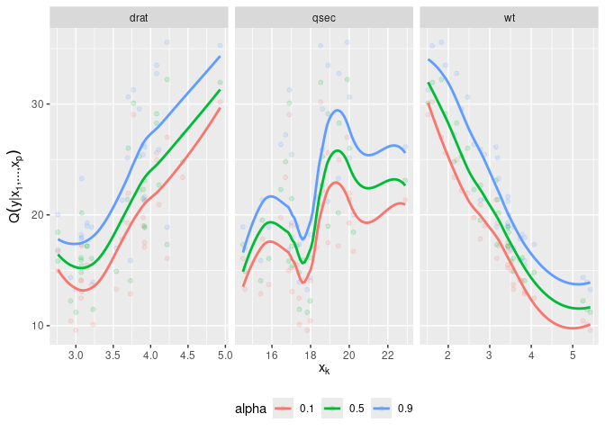

Fit D-vine copula regression models for conditional mean and quantile prediction with continuous or discrete variables.
How to install
-
the stable release from CRAN:
install.packages("vinereg") -
the latest development version:
# install.packages("remotes") remotes::install_github("tnagler/vinereg", build_vignettes = TRUE)
Functionality
vinereg provides:
- automatic covariate selection or a user-specified D-vine order;
- parametric and nonparametric pair-copula families;
- conditional mean, quantile, distribution, and density predictions;
- support for continuous, ordered, and unordered variables; and
- standard model summaries, information criteria, and marginal effect plots.
See the package website for the complete reference and worked examples.
Example
set.seed(5)
library(vinereg)
data(mtcars)
# declare factors and discrete variables
for (var in c("cyl", "vs", "gear", "carb"))
mtcars[[var]] <- as.ordered(mtcars[[var]])
mtcars[["am"]] <- as.factor(mtcars[["am"]])
# fit model
(fit <- vinereg(mpg ~ ., family_set = "nonpar", data = mtcars))
#> D-vine regression model: mpg | wt, qsec, drat
#> nobs = 32, edf = 20.35, cll = -57.42, caic = 155.54, cbic = 185.36
summary(fit)
#> var edf cll caic cbic p_value
#> 1 mpg 3.803013 -100.046939 207.699904 213.274116 NA
#> 2 wt 9.871177 29.583463 -39.424574 -24.956036 4.600863e-09
#> 3 qsec 5.389674 7.422915 -4.066482 3.833357 1.449560e-02
#> 4 drat 1.282135 5.617764 -8.671258 -6.791987 1.321129e-03
AIC(fit)
#> [1] 155.5376
# show marginal effects for all selected variables
plot_effects(fit)